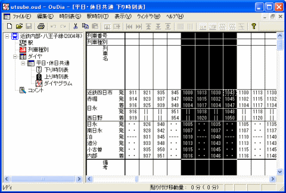

OuDia では、横に並んでいる複数の列車を、一度に切り取り・コピー・消去することができます。
１． [Shift] キーを押しながら、フォーカスセルを左右に移動させると、複数の列車を選択することができます。選択されている列車は、表示が反転します。
 マウスの左ボタンを押しながらフォーカスセルをドラッグすることにより、複数列車を選択することもできます。
マウスの左ボタンを押しながらフォーカスセルをドラッグすることにより、複数列車を選択することもできます。

（この例では、近鉄四日市10:00発から10:43発までの4本の列車を選択しています）
２． この状態で、メニューコマンド[編集]→[切り取り]を選択すると、表示が反転している列車を一度に切り取ることができます。切り取った列車は、クリップボードに格納されます。
※ メニューコマンド[編集]→[切り取り]の代わりに[編集]→[コピー]・[編集]→[消去] を選択すると、複数の列車を一度にコピー・消去することができます。
３． 切り取り・コピーした複数の列車は、メニューコマンド [編集]→[貼り付け] で、まとめて貼り付けることができます。